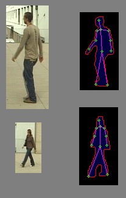
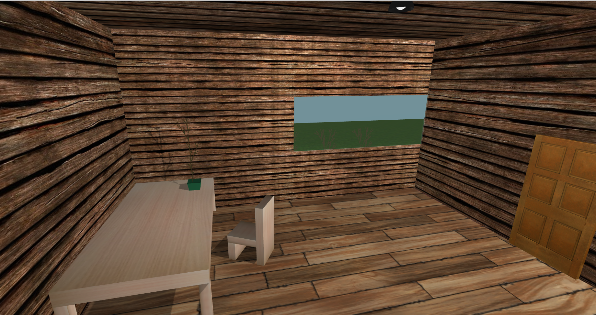
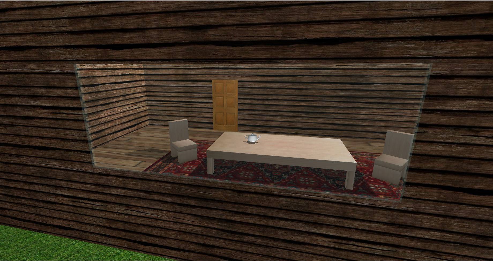
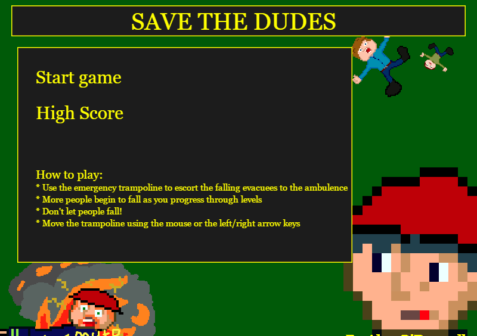

Details
Module
- CS39440
- Major Project(dissertation)
- 2017
Topics
- Computer Vision
- Pedestrian Detection
- Security
The purpose of my major project was to automate the process of searching for
pedestrians in pre-recorded videos, which could potentially be applied to live
CCTV. With the help of OpenCV, the system uses background subtraction to extract
binary shapes from the frames. Using various algorithms it attempts to locate features
such as arms and legs in the larger shapes. If the number of valid features falls above
a threshold, the program classifies the shape as a person. Each large shape that is found
is recorded in a log, containing the source image, interpretation image and the timestamp
of when it was found.
Source code available here.



Details
Module
- CS32310
- Advanced Computer Graphics
- 2016
Topics
- 3D Modelling
- Textures
- Lighting
Developing virtual worlds serves many purposes, from computer games and cartoon movies for entertainment,
to architectural modelling and visualization for industry. An example of a 3D virtual world was created,
resembling a house with various objects and features that interact with the user.
The goal of this project was to create virtual world that utilises
textures, lighting, shadows and interaction. It was made using three.js, a 3D graphics
library for JavaScript. The user is able to navigate a scene containing 3D models of varying complexity.
Requires Mozilla Firefox for compatibility reasons.
Source code available here.



Details
Module
- CS25210
- Client-Side Graphics Programming For The Web
- 2015
Topics
- Gameplay
- JavaScript
- Pixel Art
This assignment involved creating a game that a user can run on their web browser that maintains
high scores via the client. Based on the Game and Watch, the game involves trampolining falling people
away from a fire without dropping them. The people bounce around using simple gravity physics, and it gets
progressively harder as the game goes on.
Source code available here.
